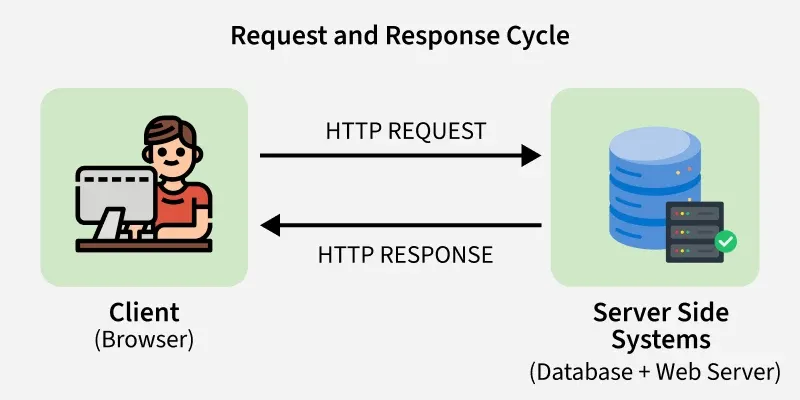
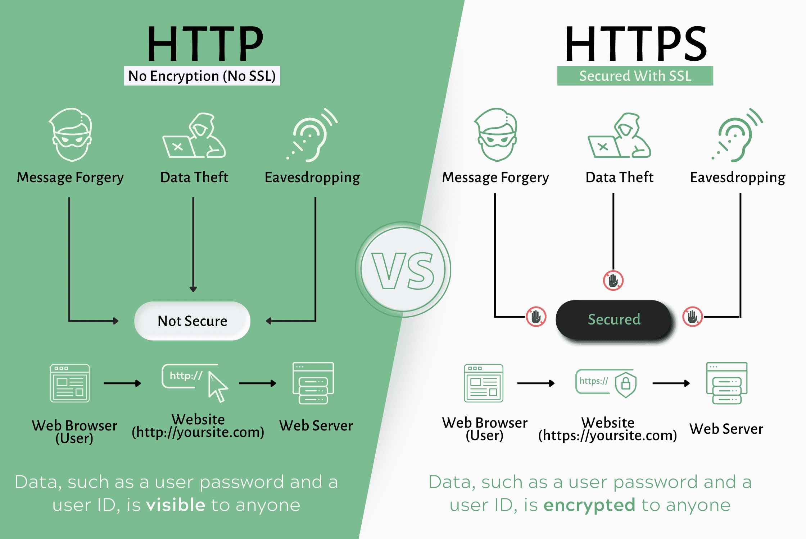

Hypertext Transfer Protocol (HTTP)
Category: Protocols & Web Communication
Definition
HTTP is the foundation of any data exchange on the Web. It is a protocol used for transmitting hypermedia documents, such as HTML. It was designed for communication between web browsers and web servers.
The Request-Response Cycle
The communication between a browser (Client) and a server (Host) happens in a specific cycle. This is the core mechanism of the HTTP protocol:

- The Request: The client sends an HTTP request message to the server. This includes a Method (like GET or POST), a URL, and Headers (info about the browser).
- The Processing: The web server receives the request, locates the resource (like an HTML file), or passes the request to the Logic Tier.
- The Response: The server sends back an HTTP response message. This contains a Status Code (e.g.,
200 OKor404 Not Found) and the actual content (the HTML/image).
Statelessness
A key technical characteristic mentioned in Topic 1 is that HTTP is stateless. This means the server does not "remember" the client between requests. Each request is handled as a brand-new interaction.
HTTP vs. HTTPS

While HTTP sends data in "plain text," HTTPS (Hypertext Transfer Protocol Secure) uses encryption to protect the data while it is in transit, which is essential for modern Web Applications.